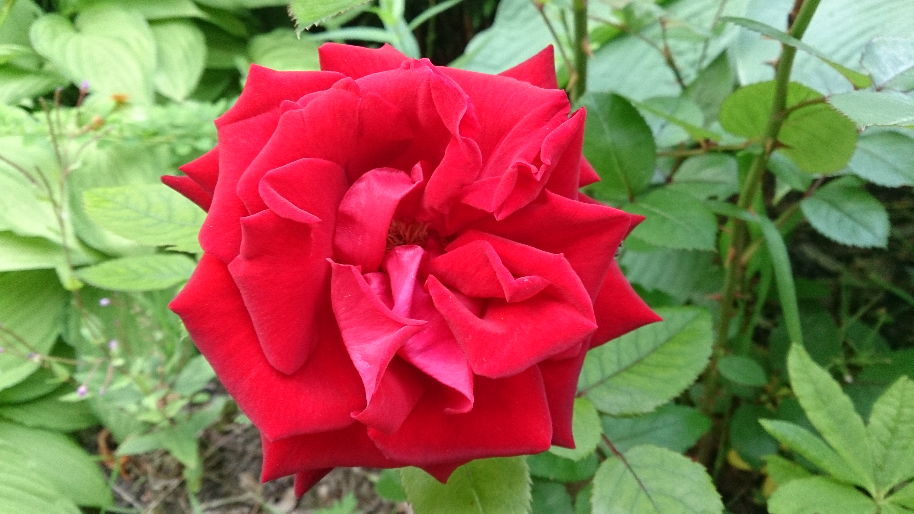

Övning 7a
Skapa en centrerad ruta (300px) med lite centrerad text i.
Övning 7a
Yiippiiiiii!
Övning 7b
Skapa en centrerad ruta(300px) med en centrerad bild(100px) i.
Bilder är anpassad för webben, dvs max 100kB. Anpassa Ros bilden för webben
Övning 7b

Övning 7c
Skapa en centrerad ruta med lite centrerad text och bild i.
Försök likna exemplet nedan. Bilden ska vara i grå/svartvit.
Övning 7c
ROS!
Övning 7d
Skapa en centrerad ruta med en centrerad bild i.
Centrerad i alla riktningar :)
Övning 7d